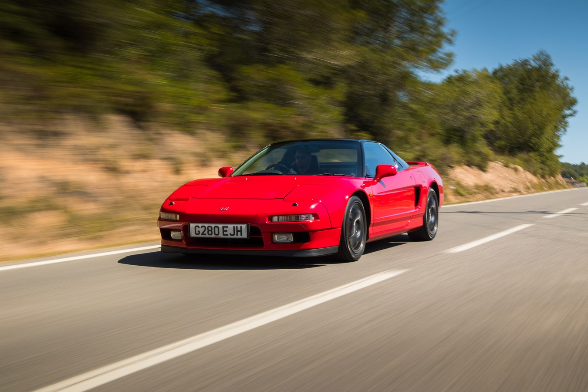

-
Styl i Design:
NSX wyróżnia się charakterystycznym, aerodynamicznym designem, który nadaje mu sportowy i elegancki wygląd. Jego opływowe linie, nisko osadzona sylwetka i muskularne nadkola podkreślają dynamikę pojazdu. Projekt NSX był efektem współpracy z włoskim projektantem Pininfariną, co wpłynęło na estetykę samochodu. Charakterystyczne są też chowane reflektory, które podkreślają futurystyczny wygląd.
-
Silnik:
NSX jest napędzany przez legendarny silnik V6 o pojemności 3,0 litra, znany jako C30A. Silnik ten był wyposażony w technologię VTEC (Variable Valve Timing and Lift Electronic Control), co zapewniało doskonałe osiągi i elastyczność. C30A był jednym z pierwszych silników V6 wyposażonych w technologię VTEC, co sprawiło, że NSX oferował imponującą moc, rewelacyjne przyspieszenie i dynamiczne prowadzenie.
-
Technologia:
NSX był wyposażony w zaawansowane rozwiązania technologiczne jak na swoje czasy, takie jak aluminiowa rama nośna, niezależne zawieszenie na wszystkich kołach oraz układ kierowniczy typu rack-and-pinion, które zapewniały doskonałą precyzję i odpowiedź kierownicy.
-
Wydajność:
Dzięki lekkiej konstrukcji i doskonałemu rozkładowi masy, NSX zapewniał doskonałe właściwości prowadzenia i rewelacyjne osiągi. Jego precyzyjne sterowanie, zwrotność i stabilność czyniły go przyjemnym do prowadzenia zarówno na torze, jak i na drodze. NSX był uznawany za jeden z najlepiej prowadzących się samochodów swojej epoki, co przyczyniło się do jego statusu legendy.
-
Dziedzictwo i kultura:
Honda NSX z lat 90. jest uważana za jeden z najważniejszych japońskich supersamochodów w historii motoryzacji. Jej innowacyjna technologia, doskonałe osiągi i elegancki design sprawiły, że zdobyła sobie uznanie zarówno wśród krytyków, jak i miłośników samochodów na całym świecie. NSX nadal cieszy się kultowym statusem wśród entuzjastów motoryzacji, a dobrze utrzymane egzemplarze są wysoko cenione przez kolekcjonerów. Jego wpływ na przemysł motoryzacyjny jest nadal odczuwalny, a dziedzictwo NSX jest kontynuowane przez nowe modele tej legendy.
Honda NSX

Honda NSX, znana również jako Acura NSX w Stanach Zjednoczonych, to legendarny japoński supersamochód z lat 90. Zaprojektowana jako konkurent dla największych marek sportowych, takich jak Ferrari czy Porsche, NSX oferowała połączenie doskonałej wydajności, innowacyjnej technologii i niezawodności. Oto szczegółowy opis Honday NSX z lat 90.: